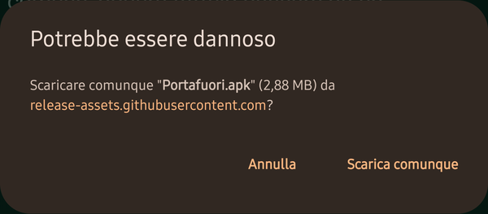
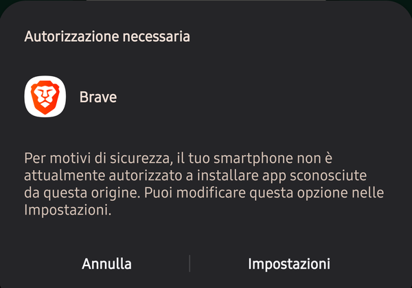
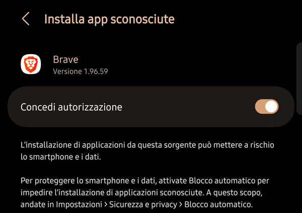
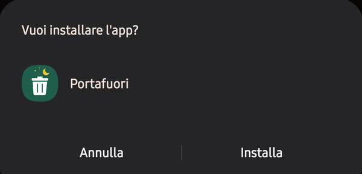
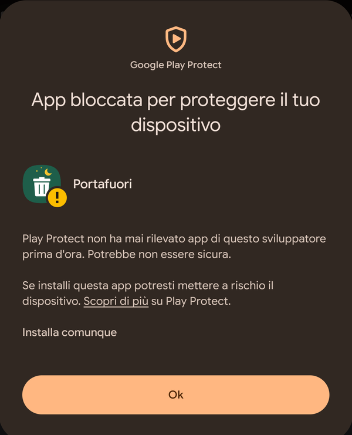
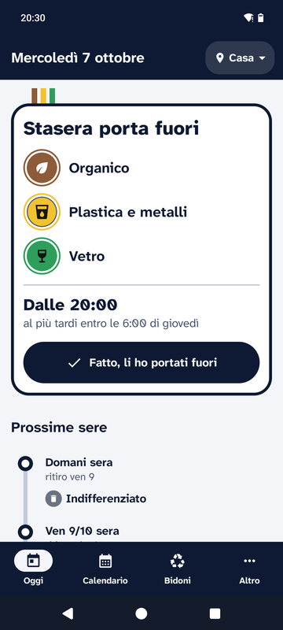
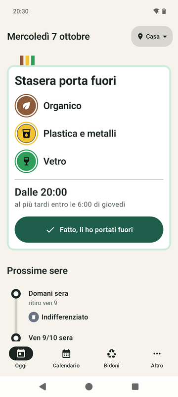
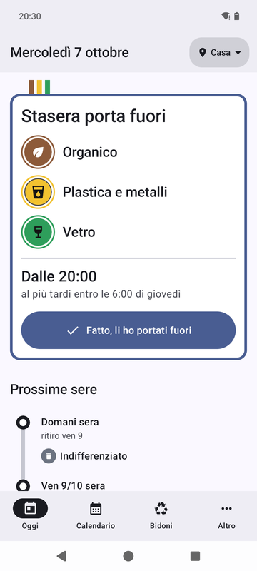

Come si installa
- Tocca «Scarica Portafuori». Il browser avvisa che il file potrebbe essere dannoso: tocca «Scarica comunque».

- Apri il file Portafuori.apk dalla notifica del download o dall'elenco dei download del browser. La prima volta Android chiede un'autorizzazione: tocca «Impostazioni».

- Attiva «Concedi autorizzazione» per il browser che hai usato (su alcuni telefoni si chiama «Consenti da questa fonte»). Poi torna indietro e riapri il file.

- Tocca «Installa».

- Se compare Google Play Protect, tocca «Altri dettagli» e poi «Installa comunque». Alla fine apri Portafuori e segui i passaggi per inserire il tuo calendario.

Android e Play Protect avvisano perché l'app non arriva dal Play Store e il suo autore è nuovo, non perché abbiano trovato qualcosa. Il codice è pubblico: chiunque può controllarlo.
Su Samsung, se l'installazione viene bloccata dal Blocco automatico, disattivalo per un momento in Impostazioni › Sicurezza e privacy › Blocco automatico, e riattivalo dopo.
Scegli lo stile
In Altro › Stile scegli come appare l'app: Linee, Originale (i colori delle prime versioni) oppure Android (i colori del tuo sfondo, da Android 12). Widget e notifiche seguono lo stile.

Linee
Originale
Android
È sicura?
- L'app non può usare Internet: i tuoi dati restano sul telefono.
- Niente account, niente pubblicità, niente statistiche.
- Il calendario esce dal telefono solo quando lo condividi tu con un vicino.
Il codice sorgente è aperto. Se vuoi, puoi verificare il file: nella pagina della versione trovi le impronte SHA-256 dell'APK e della firma.
Sostieni Portafuori
Portafuori è gratis, senza pubblicità e senza abbonamenti. Se ti è utile, puoi offrirmi un caffè.
Offrimi un caffè